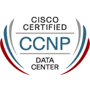
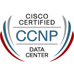

Certificações
 


- Security Core
- Security Identity Management Implementation
- Meraki Solutions
Experiência Profissional
Mar/2023 - Atualmente
Líder Técnico - Segurança & Compliance
Extreme Digital Solutions- Desenvolvimento e gestão de políticas de segurança e compliance.
- Integrações utilizando SDKs de provedores de nuvem.
- Desenvolvimento de tarefas periódicas para relatórios e notificações.
Nov/2019 - Mar/2023
Arquiteto de Soluções
Extreme Digital Solutions- Desenvolvimento de arquitetura e BOM para projetos.
- Implementação e configuração de soluções.
Ago/2019 - Nov/2019
Líder Técnico - Redes & Segurança
Stefanini- Gestão e atendimento N3 para 15 contratos, liderando equipe de 6 profissionais.
- Entrega mensal de relatórios com KPIs para melhoria contínua.
- Desenvolvimento de ETLs para consolidar dados de múltiplos ambientes.
Ago/2018 - Ago/2019
Analista de Infraestrutura Sênior
IOS- Execução de demandas de redes, firewall, proxy, VPN-SSL e IPSec.
- Execução de projetos de melhoria de rede física e lógica (LAN/WLAN).
- Desenvolvimento de automações de relatórios mensais com KPIs.